来源：https://pxnncqmeelz.feishu.cn/docx/TN51dWln3oBvJkxOOiqcL5kWnof
圈友们，你们好。我是森林，一个在部队服役八年，去年9月退伍的老兵。
在部队的时候，我就开始关注网上的事情。一次巧合，我和朋友聊到，想要退伍之后回家创业。
他告诉我，推荐你进入生财里面有很多教你如何赚钱的人，同时里面也很多创业的信息，对你一定有用。
本来我就是一个有付费意识的人，于是就加入生财。
在部队服役的时候，我就一直希望能够参加航海，奈何部队有限制。
手机只有周末的时候发两天，工作日只能用一个小时，时间太少。
退伍之后，我去了杭州做房地产销售，过了几天，我看到航海又要开始，看了很多。
觉得线下同城实体发售挺适合我的，碰巧航海也在杭州培训。
于是我果断决定报名，同时我还跟公司请假一个月，就是为了参加航海。
作为一个在部队待8年，只是对军事训练熟悉的老兵。
面对赚钱这件事还是有比较陌生的，毕竟过去的八年是吃了上顿就会有下顿的生活。
参加航海的两个月，确实让我开了眼界。
不仅惊叹于孙策老师的商业构思如此天衣无缝，又让自己学到钱是如何挣的。
在做商务老师的时候，我也更加认清自己的优势，
以下是我参加同城实体发售两个月变现8千多的思考和复盘。
两个月的时间，我去了湖州、长兴、宣城、合肥和荆州这五个地方。
每个城市给的体感都很不同，一共开了8单，总共变现8千多，下面是具体数据的一角。
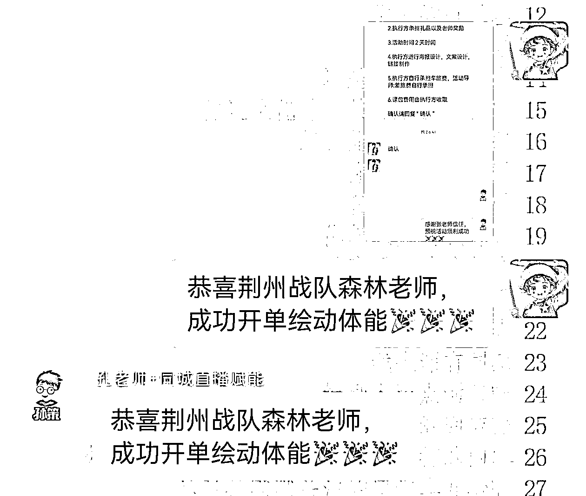
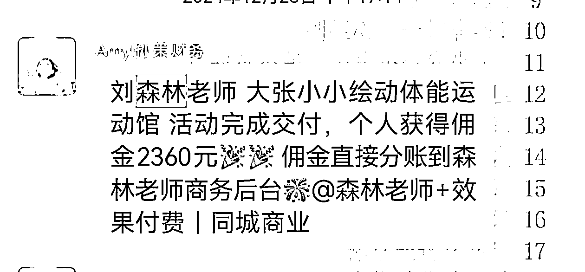
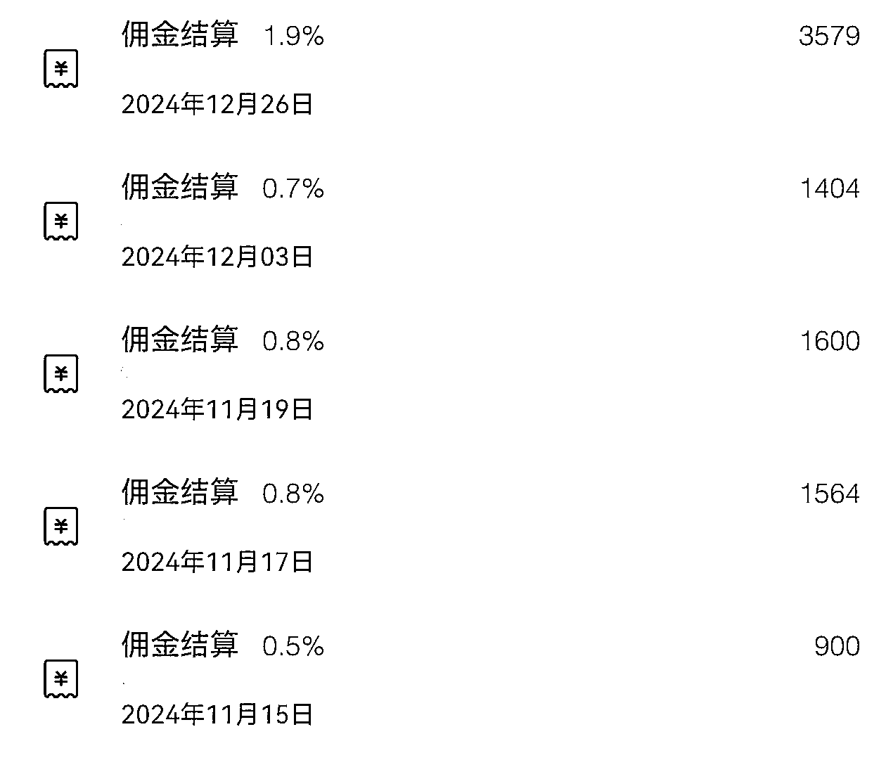
航海是10月22号开始，前两天是培训，从没有做过流量和营销的我，听孙策老师在台上的时候，是有点懵的。
因为我根本不懂这些，只有在培训的时候，把孙策老师讲课的内容用飞书妙记下来，回去之后再慢慢消化。
同时，我还一直翻生财里面关于同城实体发售的帖子，后面才大致明白这是一个什么样的业务。
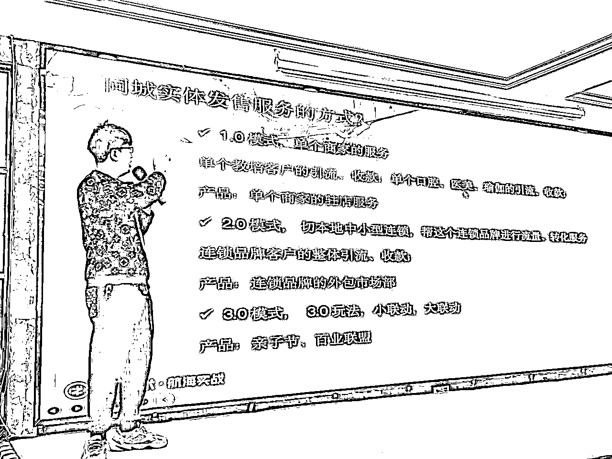
简单来说，我们是属于第三方招生团队，跟艺培机构这样的校区谈合作。
帮助他们做招生活动，给他们做一次集中发售。
通过拼团和抖音裂变、地推等方式，做前端的引流，这是前半部分。
后半部分是做转化，把前面引流过来买小课包的学生，邀约到店做升单，
推销学生购买高客单的课程（全年班、半年班和季班）
我们所赚的钱，是前期引流包和后期做转化收的佣金。
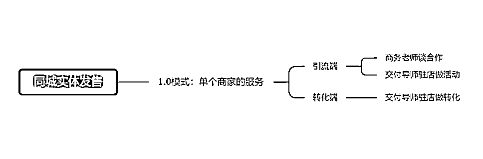
培训结束后，在湖州开始拜访校区的第一天，我们五个人跟着团队长孔老师。
从早上10点出发，到晚上8点回酒店，除了吃饭休息一下，
其余时间都是在跑校区，几乎每天都是拉满的状态。
但是第一天，谈的所有校区竟然没有愿意跟我们合作的。
我当时就有点失望，跟培训的时候讲的完全不一样。
说市场需求很大，校区招生是个缺口。
可是到了湖州，怎么就不一样了呢？
我想了想别急，还是再等一等，才能验证它行不行。
有心插树树不成，无心插柳柳成荫。
在第一天的时候，我们上午去的一家叫秦汉胡同的机构没有开门，
我看门上有微信二维码就想试试，扫了一下。
写申请词的时候，我就表明自己的身份是招生团队的。
没想到竟然对方同意了，并且把校长的微信推给我，后面就约了二聊。
这里要说一下，有老师带，谈成几率是很高的。跟这个校长谈的时候，
我是个小白啥都不懂，只知道大概的谈单流程。
那时候有个机制就是我们可以提前预约有经验的老师，让他们辅助我们谈单。
如果只靠我自己是很难谈成的。于是在第一周我就出单。
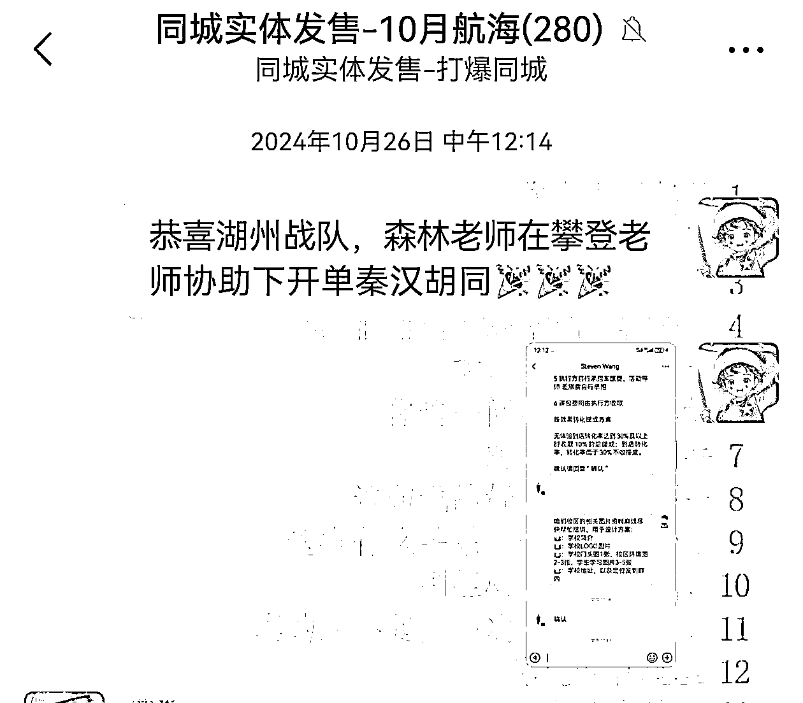
去湖州的时候，刚开始几天我一个人住单间。
有一天晚上孔老师给我发消息，说有个圈友，因为有事提前离开了，给我找了个室友。
因为这个缘故，后面我也和他组成了谈单搭子，他的名字叫易芝。
新手时期，一个人跑校区跟两个人跑校区感觉是完全不一样的。
因为每个人对待这个业务的视角是不一样的，包括谈单的思路。
大家在一起可以相互学习，相互指点，相互弥补，一起复盘。
我有了搭子之后，成长的速度是很高的。
因为我们的业务属于存量市场，就是一个城市跑完之后，能谈成的也就差不多了。
接着就要换下一个城市，后面我们就去了宣城。
我和我的搭子到宣城的时候，时机有点晚。
很多校区都被提前来的圈友跑过了，
我看群里发的喜报消息，有的人一天就开了四单。
虽然失去了先机，但是我和我的搭子去湖州市下面的长兴县跑的时候，
对同城实体发售业务有更多的体感，就是触底。虽然不好听，
但是很管用，因为对业务适合的城市有了更深的体会。
市区跟县城有很多的区别。一个市区对的东西跨度至少有20公里。
但是县城就不一样，因为小，县城的东西跨度只有5公里左右。
（下面是长兴的教培机构分布的情况）
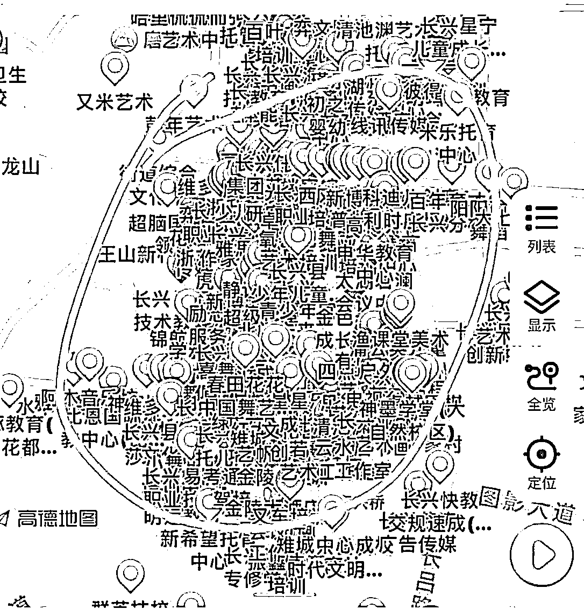
很多机构几乎是一家独大根本不愁生源，方圆三公里以内就我一家开乒乓球的。
肯定不需要搞招生活动，学生都是自动找上门。
宣城跑完之后，一个月的航海也就到了尾声 ，因为不同的原因，很多圈友也都选择了离开。
但是在这一个月的时间里面，我觉得自己收获了很多，所以觉得还可以继续学习，自己肯定会有成长。
那个时候，我的谈单搭子也回嘉兴了，后面就我自己一个人在合肥跑校区。
我自己跑之后就很奇怪，在合肥跑了三个星期，竟然没有开一单。
我去的地方，给我反馈都是做过这样的活动，感觉没有效果，所以不打算做。
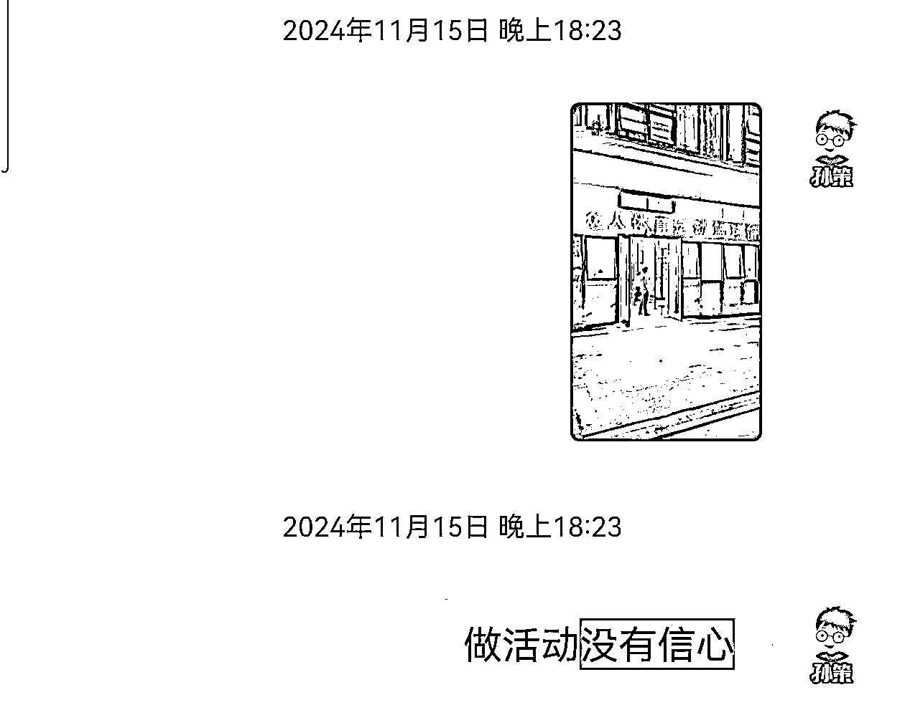
尽管没有出单，但是给我的感觉，就像是在部队练习实弹射击一样，
打第一发的时候，靶壕里面的人会提醒你弹着点偏上。
这个时候，我会根据反馈进行调整，枪口稍稍往下，就能击中白心10环。
做业务就像打靶一样，要根据市场反馈，来调整自己的动作。
作为一线的商务，我知道最跟我们业务匹配的城市，是什么样的城市。
二线以上的城市，普遍商业认知比较高。
十八线的小县城几乎是一家独大。
只有的三四线小城市的艺培机构招生是残酷的，
地域广，商业认知低，大品牌店和自营小店相互竞争。
所以，紧着我们就去了荆州，跑完之后，果然跟我预想的一样。
很多的机构都是有需求的，半个月的时间里我开了三单。
有两个聊完之后，第二天主动约我谈一谈的，有一个是见面第一次就成交。
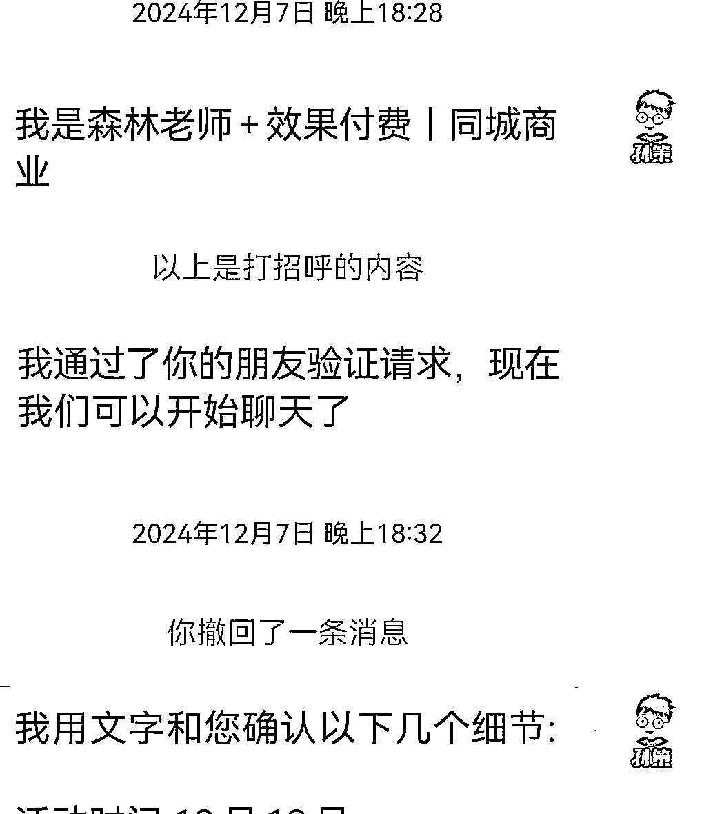
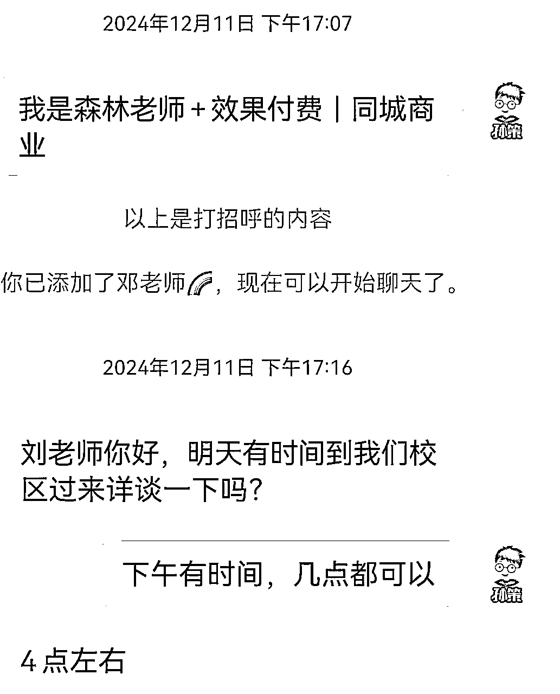
但是好巧不巧，这个时间点有点尴尬，因为还有一个多月的时间就要过年。
按照校区招生的节奏，很多校区是打算把老生资源用年后开学之际做一波引流招生，效果比年前来的好。
所以在十二月中旬以后我们也进入到了休整期。
参加航海之前，我对商务谈单是一片空白，只是学过一些销售的技巧。所以参加之前，我也挺恐慌的。
我能不能赚回学费？我能不能做到收支平衡？我能不能开单？我会不会垫底？
后面结束之后，觉得这些都是假问题，不需要思考的问题。
我记得小梦和石榴老师带我的时候，我会时不时的问她们：
你们之前参加上一期的航海，变现了多少钱？
她们告诉我：不要在意结果，你应该在过程里努力，
做好每一个环节，才能拿到结果。
你想得到什么样的结果，一定是你在这过程中，有多努力有多认真而决定的。
所以，在后面独自跑校区，独自谈单的时候，我也建立自己的工作流程，谈单流程。
虽然收益不高，但对我来说，已经很满足，因为今天的我，不是昨天的我。
下面我就和你们分享一下，自己谈单时的几点思考吧，是基于我成功和失败中得来的经验。
客户愿意跟你合作，首先是基于你这个人是什么样的。
线下谈合作跟线上不一样，线上只能通过文字或者是电话去了解你。
但是线下对方会根据你的谈吐和形象而带来的感受来确定是否愿意跟你合作，所以状态很重要。
有一次，我在跟一个50岁左右的校长聊天，他是非常不愿意做此类活动，一直处于悲观的情绪之中。
但是我始终给他释放出的是乐观和自信的状态。
临走之前，他和我说：如果年后有机会，咱们可以尝试合作一次，我感受到你的乐观和自信了。
就是用这种神采飞扬的状态，在我第一次独立和一家跆拳道校长谈单的时候，
争取到对方的信任，达成合作。后面我也和张岚老师在这一单里面拿到2800的佣金。
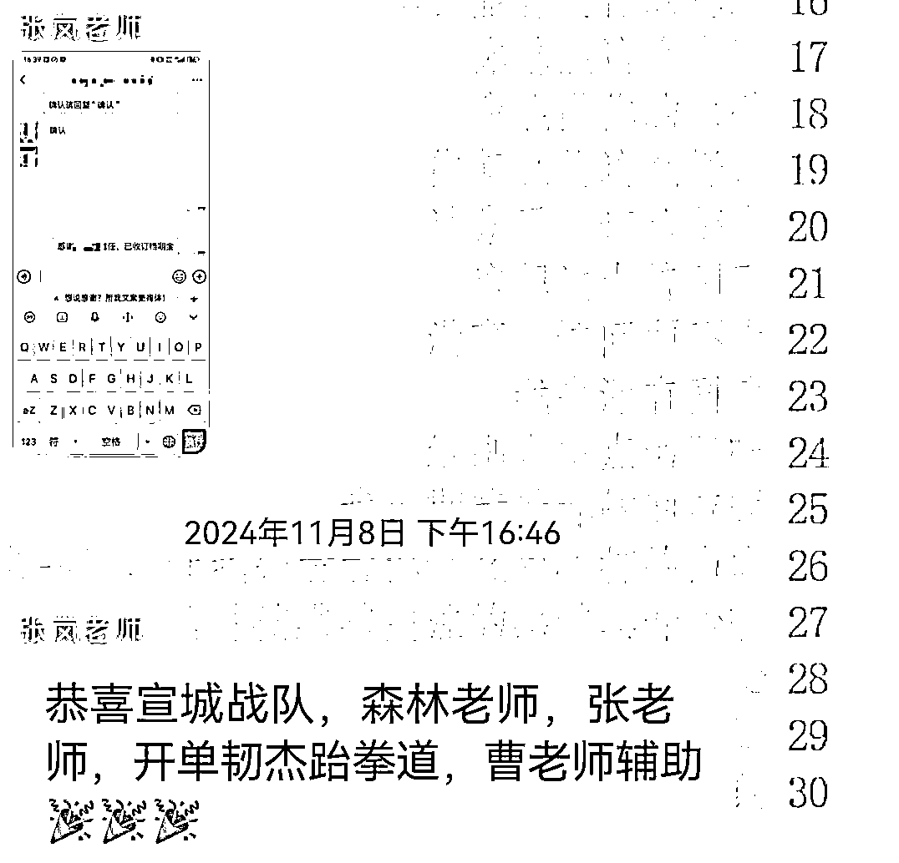
在谈合作的过程中，我们不仅是销售，要向客户推销自己的方案和产品。
更是一家机构的活动策划师，为校区制定适合他们的活动招生方案，
做好这一步，更能给自己带来更多的收益。
在谈一家教培机构的时候，我没有想清楚，给校区制定一个299的课包，对家长来说价格有点高。
所以导致后面的买课包的学生不是很多，因为优惠幅度不大。
造成这样的原因，是因为我的经验太少。下一次我一定会在原有的基础上价格下调100元。
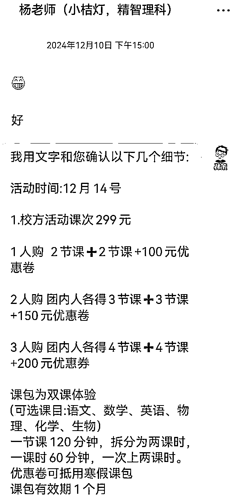
刚开始的时候，我们是早上8点半复盘，在10点左右出门，晚上8点回来。
后面我们逐渐摸清校区开门的规律之后，就开始灵活调整。
大多校区都是在下午2点之后才开门，我们上午出去，几乎是见不到校长的。
于是我们就调整为，周一全天休息，工作日，下午一点出门，晚上8点回来，周末全天出去跑业务。
这样我们就集中精力在最容易见到校长的时间谈合作，那么成单的几率也会更大。
一天下来就是按照上午复盘，整理名单，列出优先二次拜访的校区。
规划下午的路线，计划好先去校长确定在的校区。
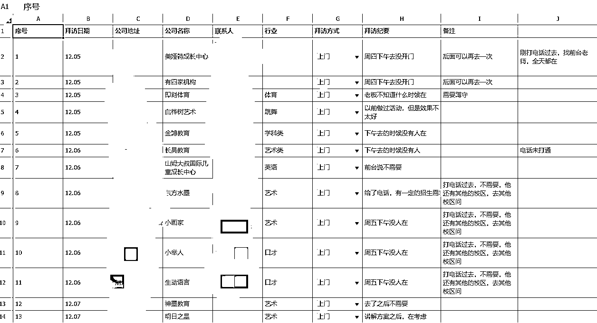
下午谈老客户和开拓新客户，原本跑一天能陌拜20家校区，后面虽然是一下午，但是也能陌拜20家校区
两者交替循环，才能持续不断地刷掉不能成交的客户，吸收潜在客户。使时间效益得到最大化。
这里我再分享3个工作心得：
跑校区的时候，想要提高效率，不要今天跑东边，明天跑西边。
要用波浪式推进的方法，假如你今天跑东边，然后到了明天你又去跑西边，
去西边的路上，然后昨天东边聊的客户，想约你见一面，你又要跑回去，
在路上就耽搁很长时间，所以跑的时候，就看好一个区域去跑。
当时我们去的时候，老师给我们每一个人都发了谈单稿，
看完我大致熟悉架构和意思之后，就按照自己的话，在电脑上重新打出来，
这样做有利于你在谈单的时候，不会感觉别扭和卡顿。
很多人谈单是没有思路的，想到什么就会说什么，
这样就有可能被校区带着走，或者是和对方漫无目的的聊天，很耽误时间。
这个时候就需要有自己的思路，才能一步步和对方谈成交。
下面就是我总结出来的一个流程，大家可以参考一下。
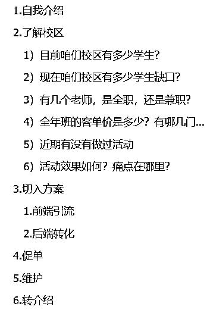
4.勤复盘快成长
刚去的时候，孔老师给我发了一句话，我觉得特别受用。
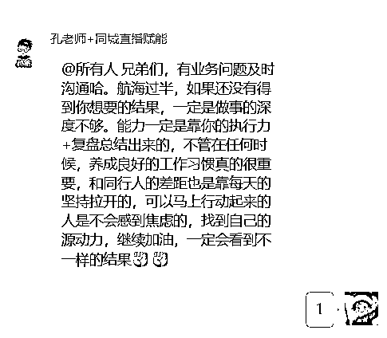
以前大家在一起跑的时候经常复盘，那个时候提升很快。
所以后面即使是我自己一个人跑校区，谈完一家之后，就立即复盘找不自己的不足，下一次要做的更好。
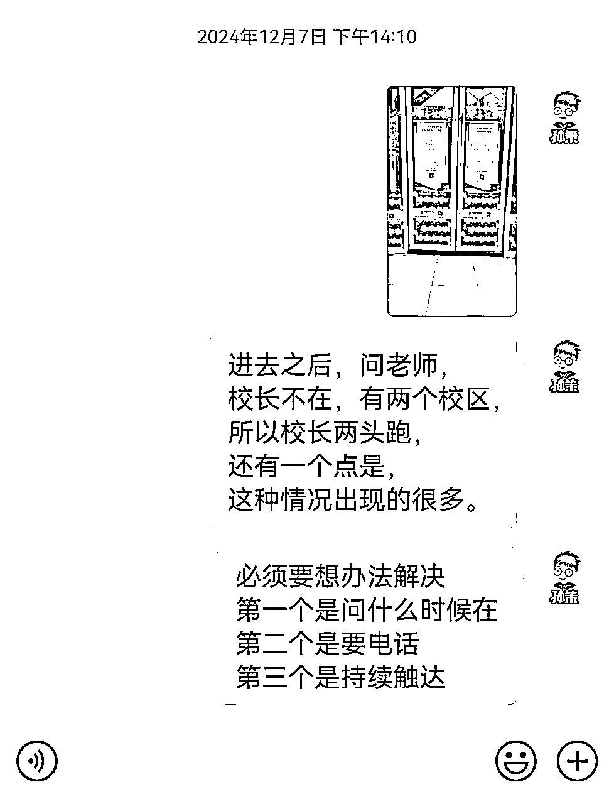
我谈了8个单子，最高的单子得到4千多的佣金，最低的只有几十块钱。
而小曹老师谈的一家合肥的机构拿到的佣金将近3万，差距真的很大。
我就在思考是那些点没有做好，才赚钱那么少。
就拿我们商务端来说，想赚到大钱，就需要以下4个环节全部到位。
1跑的勤快
回过头来看，我们跟有经验的商务老师对比起来，在于跑的太少。
因为商务BD本身就是一个需要你自己去找客户的事情。
如果你自己不主动去找客户，是不会有人上门来找你的。
我记得当时到了一个新城市之后，大家都把行李放在酒店里面先休息一会儿。
有的圈友是直接行李都带放的，直接开干。
对比起来，从源头我就慢了一步。
别人一天能跑30家，我一天才跑20家。
2谈的客户足够多
刚开始做商务的时候，我对教培行业一窍不通，也最怕校区提出一些刁钻的问题。
因为一旦回答不上来，对方就会对你产生质疑，那么信任感就会降低。
所以谈判也是需要技巧的，但是怎么练才能快速成长呢？
我记得小曹老师说过一句话：
你要想成长的快，就自己一个人跑，一个人跟校区谈。
有什么问题不懂的可以中途给我们打个电话。
也比你们两个人在一起跑来的快。
后期我自己一个人跑的时候，前面真的很吃力，因为没有人能帮助我。
谈过几次之后，我渐渐找到自己的谈单节奏和风格，面对校区的刁难也不会心慌。
3课包设计要专业
其实商务老师，也是有策划的属性在里面。有时候我们跟校长谈方案的时候，他们对于营销策划是一窍不通，或者是很精通。
如果你出的方案不够好，不能够吸引家长购买，不仅会让对方觉得你不专业，同时你的课包也卖的不多，你的课包卖的不多也就拿不了多少佣金。
我记得自己在跟一家教培机构出方案的时候，就犯了这个错误，对于荆州市来说，299元/4节课的单价其实已经有点高，要么降低价格，要么增加课时。
所以在课包设计的时候，没有好好想清楚。
4能够成交大的优质客户
有的时候发现一个很奇怪的事情，可能你谈成5家校区，但是最后得来的收益。
还不如别人谈一家优质校区拿到的佣金多。
当时，我就自己划分校区等级，
100人以下的是小校区
100人--400人的是中等校区
400人以上的是大校区
所以谈客户的时候，如果你觉得自己的能力足够强，
能够说服中等校区以上的校长，可以直接尝试跟他们谈合作。
但是新手不建议，可以先谈小校区练练手，失败了也没关系。
如果你上来就跟大校区谈，谈崩了，就是一个大的损失。
当时，我谈成的几乎都是200人以下的校区，所以收益并不是很高。
从数量、经验、专业度和客户质量，这4个维度上分析。
我才明白差距在哪里，该从那几个方向去弥补，这也就是我收益不高的原因
“无前置付费，按效果付费”这是我们见到校长的时候，说的第一句。
因为这句话，很多校长都会有兴趣跟我聊聊即使不合作。
这个模式对于很多校区来说，不用掏任何钱，就能带来新生还是有诱惑的。
孙策老师在思考商业模型的很独到，所以我们谈单才容易的多。
这个思路可用在很多地方，在合作的场景下，
既让客户不会在前期有太多的成本付出，降低压力，同时自己还能赚到钱。
参加航海两个月的时间里，我有一个月的时间里没有出过一单。
当时就觉得很奇怪，我在长兴跑了10天没有开过一单。
在宣城开了一单之后，一直到合肥有三个星期没有开一单。
再到后面去荆州开第一单，足足隔了一个月的时间。
有时候我为了去一个校区，骑电瓶车来回要两个小时，但还是没有谈成客户。
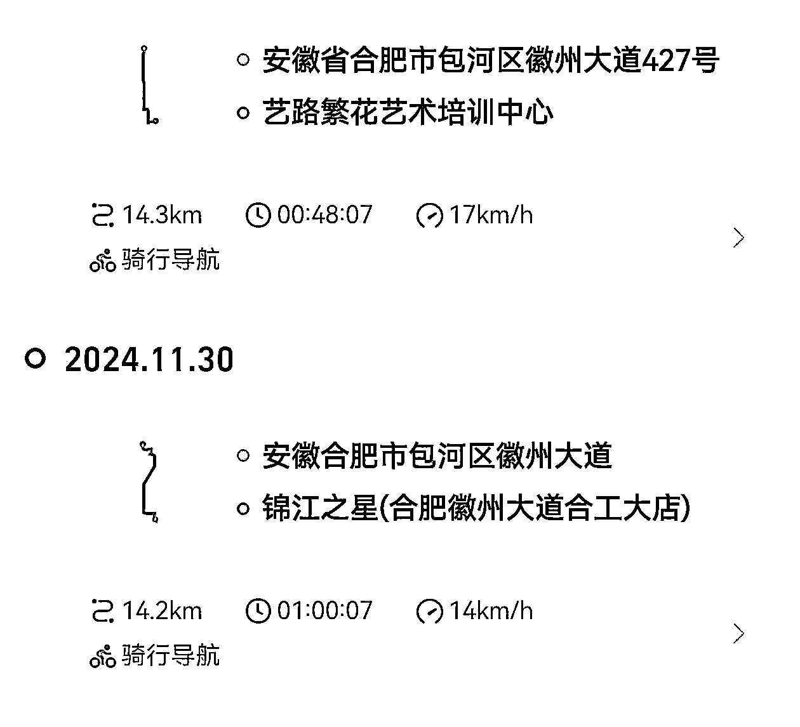
那个时候心情真的是失落到极点，大家在群里频频报喜，我都产生了自我怀疑。
到底是我的问题，还是项目的问题，还是其他原因？
甚至有时候，我到了校区门口，都会驻足很久，不想进去，因为失去信心。
但是我告诉自己想要赚到钱，你就必须要陌拜校长，不然一点机会都没有。
就这样硬着头皮跟校长聊，尽管结果还是没有谈成，但是我练习了自己的谈判能力。
但是后面换成城市之后，我依然拿回刚开始做的状态，也就有了结果。
一个星期的时间谈成了三单，赚了3千块。
所以想在短期内赚到钱的小白，请在一开始就放弃这个想法。
降低自己的预期，能够赚回自己的学费就行。
心态调整好，行为才不会变形。说不定后面就能拿到大结果。
第一次参加线下航海，对我来说是一段宝贵的经历，是一次下场实战赚钱的练习。
不仅学会做事，还在这个过程中，认识了很多优秀的圈友。
每一个人都是一个小火苗，我们聚在一起，就形成一股火焰，
大家在这个集体里面相互取暖，相互学习，收获真的很多。
谢谢圈友们读到最后，我参加同城实体发售的时候，还写了一篇做转化的复盘，感兴趣的圈友可以点进去看看。
森林学习两天一夜转化的复盘：https://pxnncqmeelz.feishu.cn/docx/DnLddLyVkoEzRJx...
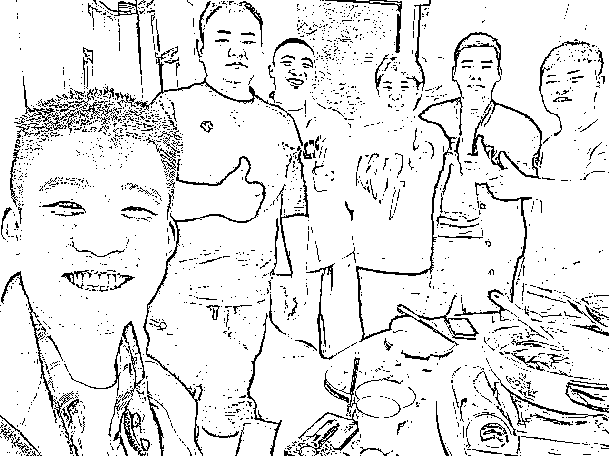